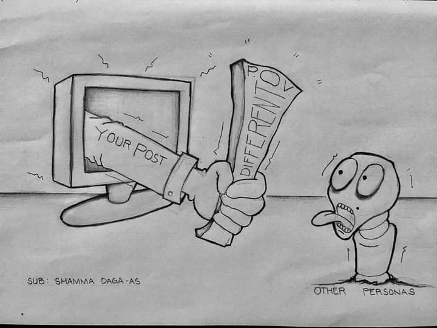
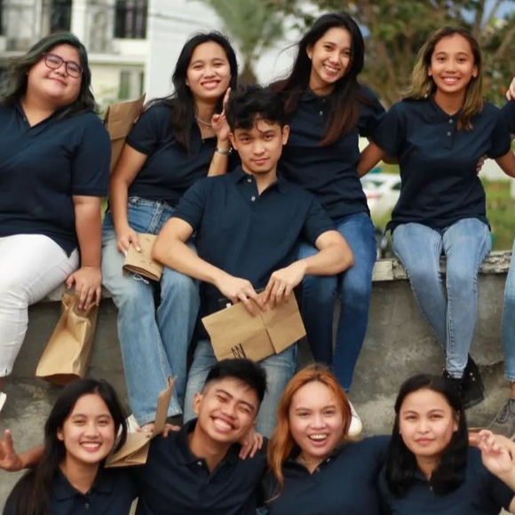
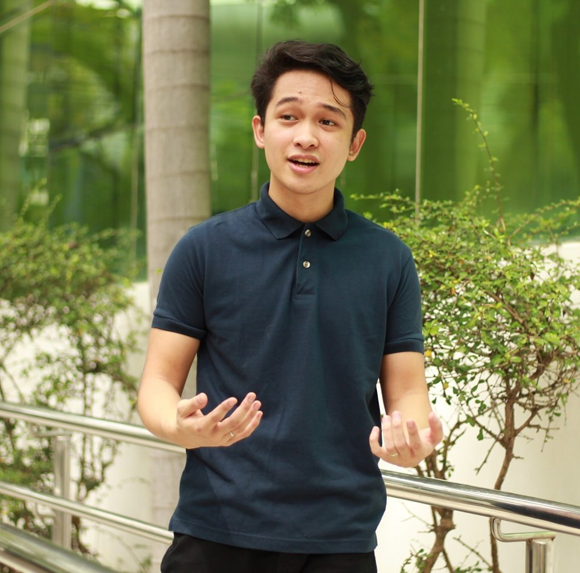

Welcome to my personal CV
Hey there! My name is Joshua, but you can call me Josh! Please do take your time on browsing through my activities for our suject IT223 || Web Systems and Technologies. This is how i would like to use as an online Portfolio through out any task given to me regarding Web Development. Also, I would like to hear your opinion as you course through my outputs. I would like to know how efficient it is and how elegant it may look.
Regardless, your feedback is very much appreciated. I am also open to Criticism, so it's really okay as long as it helps me develop my skillset for this specific project.
Thank you! Have a good one!

JOSHUA RYLE ZAMAYLA BRACHO
I decided to make this activity with a little bit of extra because, I wanted to explore more on the said topic. I really like designning and coding and I wanted to make this as another baseline on my progress as I make past College. This Would Serve me as my Online Portfolios in the long run. I would allso like to make this a milestone for every other activity that I would hopefully do involving Web Development.
Hopefully, this would serve me well as I grow and I am very open get feed back from multiple users such as Web developers and Consumers, your feed back is greatky appreciated and it helps me develop my skills on how to make things appear on the Front ended side of things, and how the logic works on the back-ended side of things.
COLLEGE || USTP
The University of Science and Technology of Southern Philippines (USTP) is a state university established on August 16, 2016 by virtue of Republic Act 10919 through the amalgamation of the Mindanao University of Science and Technology (MUST) in Cagayan de Oro City, Misamis Oriental and the Misamis Oriental State College of Agriculture and Technology (MOSCAT) in Claveria, Misamis Oriental. Both campuses are located in Northern Mindanao, the Gateway to Mindanao, which offers a strategic locational advantage for the institution to train and develop students from all the other regions of Mindanao.
At the heart of the gateway of Northern Mindanao rises the third state-run University System of the Philippines in Cagayan de Oro, geared towards excellence in education, research, extension and innovation. USTP Cagayan de Oro is recognized as the CHED Center of Excellence in Information Technology and Center of Development in Electrical Engineering and Mathematics.

EDITORIAL || Cartooning and Writting
An editorial is a journalistic writing that aims to either enlighten or explain, persuade or convince, or stimulate thought in a fun or amusing way. The editorial may have an introduction, a body, and a conclusion, much like an essay. It may use exposition, narrative, description, or reasoning in its different forms of composition. Many of the traits associated to essays are seen in many of the definitions explored here.
The word "We" is used in the editorial because it is assumed that it reflects management policy. The listener is supposed to perceive the anonymous first-person plural as representing the media, not the person who created it.Editorial cartoons in newspapers are visual representations of their creator's thoughts and beliefs. Because editorial cartoons are a business, editors and/or management may have an influence on what is published. Editorial cartoons are often published in a mass media like a newspaper, news magazine, or the Internet.




PORTFOLIO
NAME Joshua Ryle Zamayla Bracho
BIRTHDATE: November 21, 2000
ADDRESS: Block 8 lot 17, Silvercreak Town Homes
BARANGAY: Poli Carmen
MUNICIPALITY: Misamis Oriental
HEIGHT: 164cm
WEIGHT: 60kg
HOBBIES: Watching Youtube, Netflix, Playing Genshin, COD, APEX
Click me to see the full Portfolio!